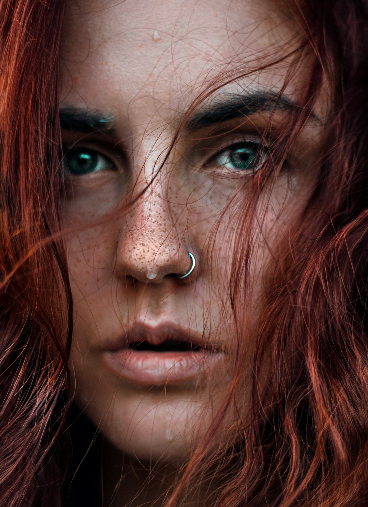
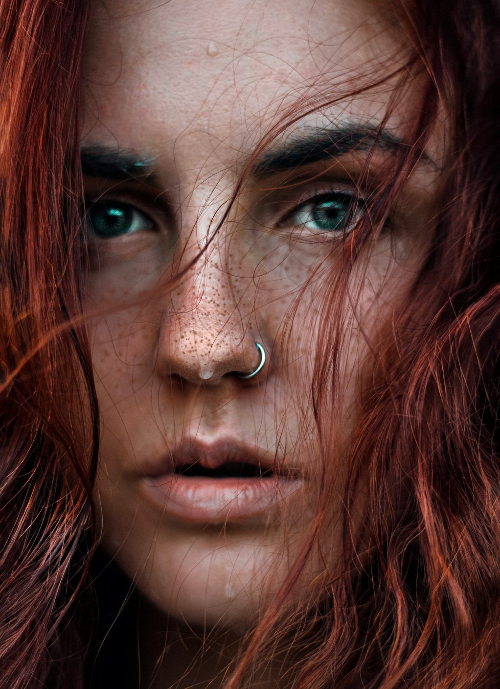

Photography

 


All
A
B
C
D
E
F
G
H
I
J
K
L
M
N
O
P
Q
R
S
T
U
V
W
X
Y
Z
Vogue / Shot
Hannah Motler features in a fasion story by the lafe for Vogue new shot
Such exposure to the fasion and beauty industries enabled her passion for branding and creativity to transition from one side of the camera to the other.
Maison ARTC: memories and culture, the base of futuristic fashion awareness. Tilila Oulhaj look

Updates

Mens Fashion
Khadim & Tom Ford
25th March 2024

Mens Fashion
Khadim & Tom Ford
25th March 2024

Mens Fashion
Khadim & Tom Ford
25th March 2024

Mens Fashion
Khadim & Tom Ford
25th March 2024
Movie Shot
London based Tom Mitchell has a distinct aesthetic within his photography & moving image
Tom's calm nature and eagerness to create; while still maintaining a high level of professionalism; has seen him slide into the fashion industry -photographing campaigns, look books, editorials, portraits, short films and TV commercials.
"Body" and "No Lie" -90s inspired R&B sound that is drawing a new comparisons to Dua Lipa
There aren't many 22 year-olds with the introspection of Icelandic artist Glowie -real name Sara Perursdottir - but then again, she's always been one for doing her own thing.